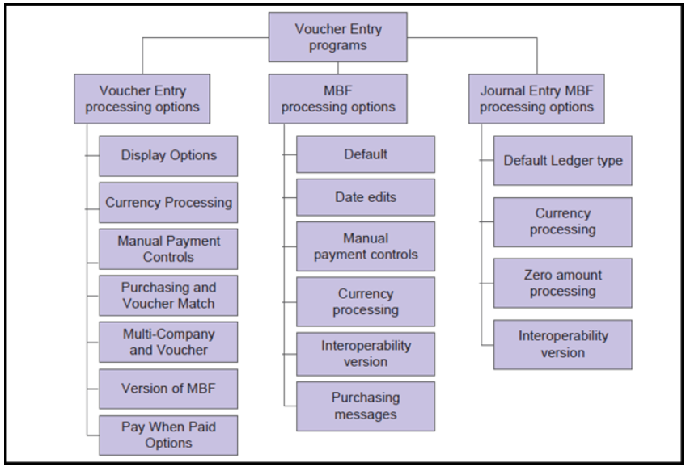
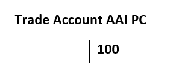
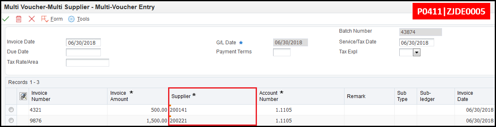

This document provides a detailed overview of how to process vouchers:
Vouchers are created before a payment is issued to a supplier. Effective management of voucher processing is fundamental in the Accounts Payable process. Voucher processing is one example of three-tier processing. All JD Edwards EnterpriseOne systems use three-tier processing to manage batches of transactions. The term three-tier refers to these standard steps:
This flowchart illustrates the three-tier process for vouchers. The first step is to enter the vouchers which creates unposted records in the Accounts Payable Ledger (F0411) and the Account Ledger (F0911) tables. The second step is to review and post the vouchers. The third and final step is to post the vouchers to the General Ledger. This final step updates the voucher’s posted code and creates offsetting entries in the Account Ledger table (F0911) and updates the Account Balance table (F0902).
There are many processing options that affect how vouchers are entered. The following graphic illustrates the processing options considered for voucher entry:

Factor/Special Payee Functionality
The Factor/Special Payee functionality allows the entry of vouchers for one supplier while the payment for the voucher is sent to a different supplier. This feature is useful in situations where goods are purchased from a supplier but the payment is sent to the supplier's parent company. To use Factor Special Payee functionality, the following set up is required:
For further information, review Chapter 6: Processing Accounts Payable Vouchers of the Oracle JD Edwards EnterpriseOne Applications Documentation.
Voucher Entry Master Business Function (P0400047) Processing Options
The Voucher Entry Master Business Function (P0400047) processing options are used to specify the default processing for voucher entry applications, including the default values used for specific transactions.
| Processing Option Tab | Processing Options | Explanation |
| 1. Service/Tax Date | Specify whether to use the GL date or the invoice date to indicate when the goods or services were purchased, or when tax liability is incurred. Valid values are:
| |
| 2. Pay Status Code | Specify the default pay status code for vouchers. Enter a user defined Pay Status code (00/PS). | |
| 3. Voucher Document Type | Enter a document type that exists in UDC 00/DV (Voucher Document Type). | |
| 4. Debit Memo Document Type | Specify the default Document Type for a debit memo that exists in UDC 00/DT (Voucher Document Type). | |
| 5. Alternate/Payee | Indicate whether the Factor/Special Payee or the Supplier Address Book Number defaults into the Payee field when entering vouchers. Valid values are:
| |
| 6. Debit Memo Due Date | Enter 1 to calculate the Due Date based on the Payment Terms. If left blank, the GL date is used as the Due Date. | |
| Date Edits | 1. Invoice Date > Today’s Date | Specify the kind of message displayed when a voucher is entered with an invoice date after today's date. Valid values are:
|
| 2. Invoice Date > GL Date | Specify the kind of message returned when a voucher is entered with an invoice date after the GL date. Valid values are:
| |
| Currency | 1. Value Added Tax Allowed for Multi-Currency Items | Enter 1 to allow value added tax on multicurrency vouchers. If left blank, a hard error is triggered when entering a foreign voucher with VAT tax. |
| 2. Exchange Rate Date | Enter 1 to use the GL date when retrieving the currency exchange rate. If left blank, the invoice date is used. | |
| 3. Exchange Rate Retrieval | Specify whether a warning is generated if the currency exchange rate on the voucher is in a fiscal period different from the effective date of the exchange rate in the Currency Exchange Rates table (F0015). Valid values are:
| |
| 4. Exchange Rate Tolerance Limit | During voucher entry, the exchange rate retrieved from the Currency Exchange Rate table (F0015) can be overwritten. This option places limits how far the manually entered exchange rate differs from the exchange rate in the Currency Exchange Rate table (F0015). Values are whole numbers that indicate a percent of the default exchange rate. For example, a value of 5 in this field indicates that a number that is plus or minus five percent of the default value will overwrite the exchange rate. | |
| 5. Currency Disagreement | Enter 1 to allow different currencies and do not return any messages when the currency of the payment is different from the currency of the GL bank account. Leave this processing option blank to return an error. | |
| Payments | 1. Duplicate Payment Message | Enter 1 to return a warning when a duplicate payment number is entered using the same bank account (for manual payments without voucher match). Leave this processing option blank to return a hard error. |
| Purchasing | 1. Voucher Message | Determines how the system responds to processing changes and deletions of vouchers that contain a purchase order or contract number. Valid values are:
|
| Logging | 1. Voucher Logging | Determines if voucher entry is allowed before assigning a GL account. The voucher is then distributed to the correct GL Accounts at a later time. Valid values are: Blank: Do not allow logged vouchers. 1: Allow logged vouchers. If Processing Option 1: Voucher Logging is set to 1, use AAI PP (Preliminary Distribution for Voucher Logging) and PQ (Suspense A/P Trade Account for Voucher Logging) to set the temporary accounts used for logged vouchers. To use AAI PQ, select the Use Suspense Account option in the Company Names and Numbers program (P0010). From the Organization & Account Menu (G09411), choose company names and numbers. Note: To turn on Voucher Logging, set this option to 1 along with the Processing Option 1: Voucher Logging on the Logging tab of the Standard Voucher Entry (P0411) version being used to enter logged vouchers. |
Interoperability | 1. Interoperability Version | Enter the version of the F0411 Interoperability Processing Options application (P0400048) that determines if outbound records are written. If this processing option is left blank, the default version ZJDE0001 is used. |
Standard Voucher Entry (P0411) is used for entering several different types of voucher depending on how the Processing Options are set. This entry method is a two screen process:
Records in the Accounts Payable Ledger (F0411) and General Ledger (F0911) are linked by the following fields:
| Key Field | Data Dictionary Item |
| Batch Number | ICU |
| Batch Type | ICUT |
| GL Date | DGJ |
| Company | CO |
| Supplier Number | AN8 |
| Document Number | DOC |
| Document Type | DCT |
| Document Company | KCO |
The Expense Account is debited when a voucher is entered, and the AP Trade Account is credited.


Any Document Type (DCT) that is used for vouchers must exist in the following UDC tables:
If a custom Document Type (DCT) is desired, change the Document Type used by a version of Standard Voucher Entry (P0411) by setting Processing Option 3: Voucher Document Type in the Voucher Entry Master Business Function (P0400047). To do so, follow these steps:
The required fields to enter a voucher are:
| Key Field | Data Dictionary Item |
| Company | CO |
| Supplier Number | AN8 |
| Invoice Number | VINV |
| Invoice Date | DIVJ |
| Gross Amount | AG |
| GL Date | DGJ |
| GL Account Number | ANI |
| Service/Tax Date | DSVJ |
However, there are two exceptions to these required fields:
The following screen print depicts the Standard Voucher Entry form (P0411):
Some fields are automatically populated during Standard Voucher Entry (P0411) if they are left blank:
Entering Vouchers with Taxes Using Standard Voucher Entry (P0411)
If tax is levied on the goods and services purchased from a vendor, create a taxable voucher for the transaction. To enter vouchers with taxes, complete the following setup:
After all tax setup is complete, enter a voucher with tax by following these steps:
1. From Standard Voucher Entry (P0411), click Add to load the Enter Voucher Payment Information (W0411A) form and proceed to enter the header information.
2. After the header information is entered, continue to the grid row and populate either the Gross Amount (AG) or the Taxable Amount (data dictionary item ATXA). If the Gross Amount is entered, the Tax Amount and Taxable Amount automatically populate. If the Taxable Amount is entered, the Tax Amount and the Gross Amount automatically populate.

3. If the Tax Explanation Code and Tax Rate/Area are defined in the Supplier Master information, this information is automatically filled into the grid row when the cursor moves to the next grid row. However, if different tax information is required, overwrite these fields.
4. After entering the voucher grid row information, save the voucher.
5. Enter the GL Distribution information on the GL Distribution (W0411C) form.
6. Save the voucher.
Entering Multi Currency Vouchers Using Standard Voucher Entry (P0411)
A voucher is considered foreign when the transaction currency code is different than company currency code. If a currency code is not specified during voucher entry, the currency defaults from Default Currency (data dictionary item CRRP) field in the Supplier Master (F0401) record. The exchange rate is retrieved from Currency Exchange Rates (F0015), but it can be manually entered if the following conditions exist:
After a voucher is created, the currency code cannot be modified even if the voucher is not yet posted.
When posting a foreign voucher, automatic offset entries are created in the General Ledger (F0911) to:
Before entering a foreign voucher, configure the Currency tab of the Master Business Function (P0400047) to meet specific business needs:
Foreign Vouchers With Taxes and Discounts
When entering a foreign voucher with taxes, the tax and discount amounts are calculated on the foreign side of the transaction. Using those tax and discount amounts, the exchange rate is retrieved and the tax and discount amounts calculated for the domestic side of the transaction. If the invoice or voucher has multiple pay items, the system performs soft rounding after the amounts are calculated for each side of the transaction.
Accounts Payable Debit Memos (negative vouchers) are used when a refund is received from a supplier. Apply the outstanding credit against other open vouchers, or use the credit to create a negative payment. Any of the voucher entry applications (P0411, P0411SV, P014016, P041017, and R04110ZA) allow for Debit Memo entry.
The following Processing Options on the Defaults tab of the Voucher Entry Master Business Function (P0400047) determine how Debit Memos are created:
A voucher can be revised, deleted or voided.
Sometimes it is necessary to revise posted vouchers. The system maintains an audit trail when a change is made to a posted voucher. Document type PE (change in Gross Amount) is used for the new transactions that adjusts the posted transactions. The following key fields cannot be changed:
| Key Field | Data Dictionary Item |
| Document Number | DOC |
| Document Type | DCT |
| Document Company | KCO |
| Company | CO |
| Supplier Number | AN8 |
| GL Date | DGJ |
| Currency Code | CRCD |
| Invoice Date | DIVJ |
The Company and GL Offset fields become key fields when a voucher is posted. To change the information in one of these key fields:
Some changes to a posted voucher reopen the batch and require posting the batch again. Examples of these changes are:
If the batch needs to be posted again, the batch approval status depends on the Business Processes.
Consider using Speed Status Change (P0411S) to change information that does not change the GL distribution, such as the Due Date. Speed Status Change (P0411S) does not reopen the batch. See Overview of Speed Status Change (link to the Speed Status Change tab of this new doc) for further information.
To revise a posted voucher through Supplier Ledger Inquiry or the Standard Voucher Entry (P0411) application, follow the steps below:
The difference between a void and a deletion is the audit trail in the Accounts Payable Ledger (F0411) and Account Ledger (F0911) tables. A void leaves an audit trail. A delete does not leave an audit trail.
Voiding a Voucher from Standard Voucher Entry (P0411)
To void a posted voucher from Supplier Ledger Inquiry or Standard Voucher Entry (P0411) application, follow the steps below:
1. Locate the voucher.
2. Highlight the grid line(s) for the associated voucher.
3. Select the Delete button on the task bar.

4. A pop up box displays asking if the user wants to delete the selected item.
5. Click the OK button.
6. The Enter GL Date to Void (W0411C) form displays. Enter the GL date for the void. This date is important when the period in which the voucher was originally entered has passed. If the GL date is not specified, the original date of the voucher is used and the void has to be posted to the period of the original voucher.
Revising or Voiding a Voucher from Voucher Journal Review (P0011)
To revise or void a voucher from Voucher Journal Review (P0011) application, follow the steps below:
1. Find the batch that contains the voucher.
2. Select the batch to access the detail records in the batch.
3. Highlight the grid row of the voucher, and select the Voucher option from the Row exit.

4. Follow the steps for voiding a voucher from Standard Voucher Entry (P0411).
Tables Updated When Voiding a Voucher
Accounts Payable Ledger (F0411)
When a voucher is voided or revised, a second record representing the revisions in the Accounts Payable Ledger table (F0411) is created as an audit trail. The second record is created with a Posted Code (data dictionary item POST) of blank. Therefore, the batch needs to be posted. The fields for the new record are mostly copies of the original record, with the exception of a few that are populated as follows:
The following changes are made to the original record:
Account Ledger (F0911)
In the case of a void or revision, in addition to the creation of the Accounts Payable Ledger (F0411) record, a second record is written to the General Ledger table (F0911). The second record is a copy of the unique fields for the original pay item with some additional fields that are populated as follows:
An Automatic Entry (AE) is also created for the reversal in the Accounts Payable trade account when the record is posted. This AE is created based upon the original AE from the posting of the original voucher but includes the aforementioned additional fields tracking the reversal.
Other Considerations:
The Batch Number (data dictionary item ICU) in both the Accounts Payable Ledger (F0411) and General Ledger (F0911) tables on the change or void record remains the same as the original voucher batch. To see the audit trail records, post the batch.
Adding an Attachment To A Voucher
Attachments are added to a voucher using the Supplier Ledger Inquiry application (P0411).
To add an attachment in 9.1:
1. Open Supplier Ledger Inquiry program (P0411).
2. Inquire on the voucher and highlight the record in the grid (do not drill into it).
3. From the Row Exit, select Attachments.

4. In the Media Object Viewer screen, select File, URL, or Templates to add the attachment and click OK.

5. After inquiring on the voucher again, the paperclip icon is visible at the beginning of the grid line.

To add an attachment in 9.2:
1. Open Supplier Ledger Inquiry program (P0411).
2. Inquire on the voucher and highlight the record in the grid (do not drill into it).
3. From the Row Exit, select Attachments.

4. The Attachment Manager opens on the right side of the screen. Select the Add button and an additional Attachments screen opens. Select the attachment type: File/URL or Text.

5. After inquiring on the voucher again, the paperclip icon is visible at the beginning of the grid line.

Posting Vouchers Within Accounts Payable (R09801)
After vouchers are entered, the batches are posted using the General Ledger Post program (R09801). See additional post resources below:
Document 1959882.1 - E1: FIN: Understanding Non-Purchase Related Accounts Payable Voucher Post Process Within JD Edwards EnterpriseOne Financial Management (R09801, P00241)
Additional Resources
For further information, review Chapter 6: Processing Accounts Payable Vouchers of the Oracle JD Edwards EnterpriseOne Applications Documentation.
Frequently Asked Questions
Troubleshooting Errors and Issues
Use the Speed Voucher Entry (P0411SV) program to enter high-volume, simple vouchers. Speed Voucher Entry combines the two screen process of Standard Voucher Entry (P0411) into one screen. The Accounts Payable Ledger (F0411) information and GL Distribution (F0911) information are entered on one form.
Consider using the Speed Voucher Entry method for a voucher that has:
The following screen print depicts the Speed Voucher Entry form (P0411SV):

The voucher's Gross Amount and tax information is in the header and the GL Distribution amount in the grid.
| Processing Option Tab | Processing Option Choice(s) | Explanation |
| Payments | 1. Manual Payment Creation | Specify whether to automatically generate manual payments. This processing option applies only to manual payments without voucher match and is not available in multi-company and multi-voucher modes. Values are:
|
| 2. Automatic Payment Number Assignment | Enter 1 to automatically assign the payment number based on the bank account's next number. Leave this processing option blank to manually assign the payment number. | |
| Versions | 1. Voucher Master Business Function Version | Specify the version of the Voucher Entry MBF Processing Options program (P0400047) to use for Speed Voucher Entry processing. If this processing option is left blank, version ZJDE0001 is used. |
| Pay When Paid | 1. Pay When Paid | Specify whether to enter a pay-when-paid voucher. Values are:
Note: This processing option functions in conjunction with the Pay When Paid Pay Status Code processing option on the Defaults tab of Voucher Entry MBF (P0400047). The pay status is required to be associated with pay-when-paid vouchers. |
To quickly enter several vouchers for one or more suppliers, JD Edwards EnterpriseOne provides the following multiple voucher entry methods:

These methods are only used to add vouchers. To change, delete, or void vouchers, use Standard Voucher Entry (P0411). These entry methods cannot be used to enter vouchers with:
Use the Multi Voucher – Single Supplier form (P0411|ZJDE0004) to quickly enter many vouchers for one supplier. Use the Multi Voucher – Multi Supplier form (P0411|ZJDE0005) to enter multiple vouchers for one or more suppliers. Use Multi Company – Single Supplier form (P0411|ZJDE006) to enter vouchers for one supplier distributed between multiple companies. These programs are accessed from the Other Voucher Entry Methods menu (G04111). Adding vouchers using these methods creates a voucher for each detail line and updates the Accounts Payable Ledger (F0411) and Account Ledger (F0911) tables.
Important fields in the Header:
| Field | Field Description |
| Supplier Number (AN8) | Enter the desired Supplier's Address Book Number. Note: This field is absent on the Multi Voucher-Multi Supplier (P0411|ZJDE0005) form. |
| Invoice Date (DIVJ) | The date on the received supplier's invoice. |
| GL Date (DGJ) | A date that identifies the financial period for posting the transaction. |
| Payment Terms (PTC) | A code that specifies the terms of payment, including the percentage of discount available if the invoice is paid by the discount due date. Use a blank code to indicate the most frequently-used payment term. |
| Due Date (DDJ) | The date the discount is due. If there is no discount, the net due date is displayed in this field. If this field is left blank during voucher entry, the due date is calculated using the invoice date and the Payment Terms (data dictionary item PTC). If the Payment Terms is also blank, the discount due date and net due date are calculated based on the payment terms in the Supplier Master (P04012). |
| Tax Explanation Code (EXR1) | The type of tax calculated for the suppliers vouchers. For example, S is used for Sales Tax, U for Use tax, and so on. |
| Tax Rate/Area (TXA1) | A code that identifies a tax or geographic area that has common tax rates and tax authorities. The code entered must exist in the Tax Areas (F4008) table. The Tax Rate/Area (TXA1) is used in conjunction with the Tax Explanation Code (EXR1) to calculate tax and GL Distribution amounts. |
| Service/Tax Date (DSVJ) | A date that indicates when the goods or services were purchased or when a tax liability was incurred. |
Important fields in the Grid:
| Field | Field Description |
| Invoice Number (VINV) | This is the original invoice number. Depending on the settings in the Accounts Payable Constants (P0000), the system may:
|
| Invoice Amount (AG) | A value that specifies the total amount owed on a single voucher. |
| Account Number (ANI) | A value that identifies an account. Use one of the following formats to enter account numbers:
|
| Remark (RMK) | A generic field that used for a remark, description, name, or address. |
Multi voucher entry functionality is activated in any version of the Voucher Entry (P0411) program by adjusting Processing Option 1: Multiple Vouchers on the Multi Vouchers tab. Valid values are:
Multiple Voucher Entry (P041017)
To enter Multi Voucher – Single Supplier, use P0411 version ZJDE0004. The detail section allows for multiple vouchers entered against one supplier.

Multi Voucher - Multi Supplier
To enter Multi Voucher – Multi Supplier, use P0411 version ZJDE0005. The Supplier Number field is located in the grid rather than the header section to allow for voucher entry to multiple suppliers.

Multi Company - Single Supplier (P041016)
To enter Multi Company – Single Supplier, use P0411 version ZJDE0006. This program creates vouchers consisting of expenses incurred by multiple companies that need to be distributed to different GL offsets and Bank Accounts. The primary difference between a standard voucher and a voucher for multiple companies is that the company is not included on a multiple company voucher.

For a voucher with multiple companies:
When a multi company voucher is paid, the system uses the AP Trade Account, Bank Account, and Offset Accounts for discounts associated with the company. Information about vouchers for multiple companies is maintained in the Accounts Payable Ledger (F0411) and Account Ledger (F0911) tables.
When entering vouchers for multiple companies, the domestic currency must be the same for all companies when distributing a multi company voucher.
Multi Company – Single Supplier (P041016) is accessed via the Other Voucher Entry Methods (G04111) or is activated in any version of the Voucher Entry (P0411) program by adjusting Processing Option 1: Multi-Company Single Supplier on the Multi Company tab. Valid values are:
For further information, review Chapter 6: Processing Accounts Payable Vouchers of the Oracle JD Edwards EnterpriseOne Applications Documentation.
Recurring vouchers use a model voucher to create future vouchers for a supplier. This functionality is helpful in situations where a bill for the same amount is received in regular intervals.

To begin using the recurring vouchers feature, enter an initial voucher to use as the "model" for future recurring vouchers by following these steps:
1. Select the Recurring Voucher Inquiry (P0411|ZJDE0002) on the Other Voucher Entry Methods (G04111) menu.

2. Enter the voucher normally, except only one pay item is allowed, and enter the Recurring Frequency (data dictionary item RF) and Number of Payments (data dictionary item DRF) fields for the pay item. Define both of these fields together, otherwise the system triggers the "2438 Recurring Frequency and Number Invalid" error.


3. After completing the GL distribution information, save the voucher. The system assigns Document Type (DCT) PR for the recurring voucher. Review the voucher information in Supplier Ledger Inquiry (P0411) or by running the Recurring Voucher Report UBE (R04305).
To change a recurring voucher, select the Recurring Voucher Inquiry (P0411|ZJDE0002) application from the Other Voucher Entry Methods menu (G04111). Locate the voucher that needs to be revised and use the Revise Recurr Vchrs option from the Row exit.

To cancel a recurring voucher, clear the Recurring Frequency (RF) and Number of Payments (DRF) fields. Canceling a recurring transaction does not change the Document Type (DCT). However, a cancelled voucher does not return in the results of Recurring Voucher Inquiry when using the Recurring (data dictionary item RECVCHR) check box.
Recurring Voucher Report (R04305)
Run the Voucher Journal Report to view all recurring vouchers.

Recycle Recurring Vouchers (R048101)
The Recycle Recurring Vouchers UBE (R048101) is used to generate new recurring vouchers. When recycling a voucher, the system:
Oracle recommends setting up different versions based on the Recurring Frequency (RF) in the Data Selection.

Make sure to keep the data selection as is and only add any additional selections such as batch number or user ID.

| Processing Option Tab | Processing Option Choice(s) | Explanation |
| Defaults | 1. Invoice Number Flag | Specify the method used to assign the invoice number. Valid values are:
|
| 2. Invoice Date Flag | Specify the method used to assign the invoice date. Valid values are:
|
To duplicate the original voucher’s invoice number for each recycled voucher, set Processing Option 1: Invoice Number Flag in the Recycle Recurring Vouchers report (R048101) to 1. Otherwise the Invoice Number (VINV) for the new vouchers is left blank.
For further information, review Chapter 6: Processing Accounts Payable Vouchers of the Oracle JD Edwards EnterpriseOne Applications Documentation.
Logged vouchers are entered without an assigned expense account. A logged voucher is redistributed after an expense account is designated.
There are two methods for entering logged vouchers:

Account Entry Example to Illustrate the Two Methods
A voucher for $500 is received and entered as a logged voucher. If the Default method is used, the distribution of the logged voucher is:

After the logged voucher is redistributed, the distribution is as follows when using the Default method:

If the same voucher is entered as a logged voucher, but the Suspense Account method is used, the distribution is as follows:

After the logged voucher is redistributed, the distribution is as follows:

Complete the following setup before entering logged vouchers:
To create a logged voucher:
1. Select the Voucher Logging Entry (P04002) on the Other Voucher Entry Methods (G04111) menu.

2. Enter the voucher information. The total amount of the voucher is distributed to a GL Suspense Account as specified in AAI item PP.

3. At the Journal Entry prompt, enter the Account Number to record the offset amount to the AP Trade Account (AAI item PC) or to the A/P Suspense Account (AAI item PQ) depending on the method used.

Redistributing Logged Vouchers
After a logged voucher is entered, redistribute the voucher to the correct expense account. This process is completed via the Work with Voucher JE Redistribution (P042002) application. When a logged voucher is redistributed, the system:


For further information, review Chapter 6: Processing Accounts Payable Vouchers of the Oracle JD Edwards EnterpriseOne Applications Documentation.
Overview of Prepayment Vouchers
Prepayment vouchers are used when it is necessary to pay for goods or services before receiving an invoice. When a prepayment voucher is created, the system automatically creates a negative pay item for the same amount as the prepayment. The prepayment amount is paid immediately. After the true expenses incurred is known, a new positive amount voucher is created and netted against the negative prepayment pay item.
Prepayment vouchers are entered using the Prepayment Voucher Entry (P0411ZJDE0009) program on the Other Voucher Entry Methods (G0411) menu.

Prepaid voucher:

Payment:

Actual Expense:

Netting:

For prepayment processing, the GL offset cannot be a blank value. Set up the valid GL offset account in the Automatic Accounting Instruction (AAI) for item PC (P0012). For example, set up PCPREP (where PREP is the GL Offset) to debit/credit a valid Accounts Payable trade account. Generally, this account is different than the standard trade account to help track prepayments. However, if tracking prepayments is unnecessary, use the same account. After the offset AAI is defined, enter the GL Offset Code in Processing Option 1: G/L Offset Account on the Prepayment tab of Prepayment Voucher Entry (P0411|ZJDE0009).
Prepayment Voucher Entry Processing Options (P0411|ZJDE0009)
| Processing Option Tab | Processing Option Choice(s) | Explanation |
| Prepayments | 1. GL Offset Account | The GL Offset Code that defines the prepayment trade account AAI (e.g. PCxxxx). |
| 2. GL Distribution Account | This option is populated with a default distribution account. Prepayment vouchers create zero amount entries in the Accounts Payable Ledger (F0411) and the General Ledger (F0911). To utilize this option, set Processing Option 1: Zero Amounts on the Zero Amounts tab of the Journal Entry Master Business Function (P0900049) to blank. | |
| 3. Pay Status Code | Prepayment vouchers automatically create a negative pay item to net against the true expense voucher entered at a later time. This processing option determines the Pay Status (data dictionary item PST) for the negative pay item. Usually this value is set to H (Hold). | |
| 4. Number of Days | Use this option to enter the number of days to add to the Due Date of the negative prepayment pay item. This option is valid only in a coexistent environment. | |
| 5. Tax Area | Use this option to display the Prepayment Tax form. This form is used to assign tax codes and tax areas to negative pay items. Valid values are:
| |
| 6. Prepayment Tax Area Code | Enter the default Tax Area Code used for prepayment vouchers. | |
| 7. Prepayment Tax Explanation Code | Enter the default Tax Explanation Code used for prepayment vouchers. |
Steps to entering a Prepayment voucher:
1. Open the Prepayment Voucher Entry (P0411) program from the Other Voucher Entry Methods (G04111) menu.
2. Select Add.
3. Create a voucher for the amount of the prepayment. The GL Distribution form is not displayed. However, if Processing Option 2: GL Distribution Account is left blank, manually enter the GL Distribution Account.

4. Inquire on the new voucher. Two pay items are displayed: one for the positive amount of the prepayment and one with a negative amount of the prepayment. The GL Distribution information is for a zero amount because the two pay items net to zero.

5. Post the transaction using the General Ledger Post program (R09801).

6. Pay the positive pay item.

7. Enter a new voucher through Standard Voucher Entry (P0411) to recognize the true expense and post the true expense voucher.

8. Using Speed Status Change, change the Pay Status (data dictionary item PST) of the negative pay item of the prepayment from Hold to Approved and net this record against the new voucher. The new payment results:


The Voucher Entry Master Business Function (P0400047) processing options are used to specify the default processing for voucher entry applications, including the default values used for specific transactions and Document Type.
To have a specific document type for only Prepayment Vouchers:
Settling the Prepayment Vouchers
When a prepayment voucher is entered, the system automatically creates an additional negative pay item to counter the positive pay item. The positive pay item is paid immediately, while the negative pay item is used to offset against the standard voucher when the supplier sends the invoice. To offset the negative pay item of the prepayment voucher, use the Prepayment Selection (P0411P) program.
With this program, the negative pay item is located, selected and matched against the desired voucher.


The negative pay item created on a prepayment voucher is used like a Debit Memo. If there is an open amount to the negative pay item after netting it to its corresponding standard voucher, match the remainder against any other outstanding voucher with the same currency. However, an underpaid prepayment voucher shows as partially paid and requires an additional payment.
If there is an overpayment after the negative pay item on a prepayment voucher is netted against the actual amount in a standard voucher:
Void the payment associated with the prepayment first. After the related payment is voided, void the prepayment voucher. This void cancels both the positive and negative pay items.
To void a prepayment voucher:
For further information, review Chapter 6: Processing Accounts Payable Vouchers of the Oracle JD Edwards EnterpriseOne Applications Documentation.
Overview of Outbound Voucher Interoperability
Outbound voucher interoperability enables users to share voucher information with external systems. Data is sent from JD Edwards EnterpriseOne to an external system.
Before using this functionality, set the following to process options for the Voucher Interoperability Master Business Function (P0400048):
| Processing Option Tab | Processing Option Choice(s) | Explanation |
| Interop | 1. Transaction Type | This value comes from UDC table 00/TT (Transaction Type) which determines what type of interoperability is being used. For outbound vouchers, use JDEVOUCH. If left blank, the outbound interoperability is not performed. |
| 2. Before Image | Determines if a Before and After image are written to the F0411 Interoperability table (F0411Z3) or just an After Image. Valid Values are:
|
1. Go to Interactive Versions and inquire on P0400048.

2. Select ZJDE0001 and go to Row Exit and select processing options.

3. In processing option 1 view the UDC table and use JDEVOUCH.


F0911 Interoperability Processing Options (P0900160)
To use interoperability for the General Ledger (F0911) side of vouchers, set the F0911 Interoperability Processing Options (P0900160).
| Processing Option Tab | Processing Option Choice(s) | Explanation |
| Interop | 1. Transaction Type | This value comes from UDC table 00/TT (Transaction Type) which determines the Interoperability Version of the Journal Entry Master Business Function (P0900049) used. Use JDEJE to write to the F0911 Interoperability table (F0911Z4). If left blank, outbound interoperability is not performed. |
| 2. Before Image | Determines if Before and After images are written to the F0911 Interoperability table (F0411Z4) or just an After Image. Valid Values are:
|
1. Go to Interactive Versions and inquire on P0900160.

2. Select ZJDE0001 and go to Row Exit and select processing options.

3. In processing option 1 view the UDC table and use JDEJE.


To reduce the number of transactions written to the F0911Z4 table, use the Automatic Accounting Instruction (AAI) GLOBxx (P0012) to define ranges of accounts. Define the GLOBxx for Company 00000. The system verifies that an account number is within the ranges that are defined before writing a transaction to the F0911Z4 table. Use AAI item GLOBxx to define up to 49 account ranges. Define complete ranges consisting of a beginning and an ending AAI item. The first range must begin with GLOB01. Oracle Support recommends ending the first range with GLOB02, the next consecutive number. Define the next range, if needed, to start with GLOB03 and end with GLOB04, and so on.
Purge the F0411 Interoperability Table (F0411Z3)
To clear the F0411 Interoperability Table (F0411Z3), run the Purge F0411 Interoperability Table program (R0411Z3P). If needed, run this UBE from Batch Versions (fast path BV).
Caution: Purging does not leave an audit trail, therefore, Oracle Support recommends testing this in a Test environment first and taking a backup of the F0411Z3 before running the program. Use data selection to purge specific data.
Flat File Cross-Reference (P47002)
Use Flat File Cross-Reference (P47002) to define the properties of flat files if the voucher information needs to be written to a flat file.
For further information, review Chapter 15: Processing Interoperability Accounts Payable of the Oracle JD Edwards EnterpriseOne Applications Documentation.
Use the Speed Status Change (P0411S) application to review, modify, or release vouchers for payment before creating payment groups. Speed Status Change (P0411S) allows users to search for vouchers by:
Some vouchers require revisions before payment. If the vouchers were entered using either the Standard Voucher Entry program (P0411) or the Speed Voucher Entry program (P0411SV), use Speed Status Change (P0411S) to make changes that do not affect the voucher posting. Making changes using Speed Status Change is more efficient than using the Supplier Ledger Inquiry (P0411) because:
Changes made in Speed Status Change (P0411S) update information in the Accounts Payable Ledger (F0411) and does not affect the General Ledger (F0911).
To use Speed Status Change:
1. Go to menu G0413 and select Automatic Payment Processing then Speed Status Change.

2. Search by Supplier Address Book Number or Bank Account or Pay Status. This program has the ability to update a single voucher or globally update multiple vouchers.

3. When updating a single voucher, select the voucher and update the appropriate field, such as Bank Account or Payment Instrument.

Splitting Vouchers With Speed Status Change
To split a voucher into multiple pay items using Speed Status Change (P0411S), take the Row Exit and choose Split.

If the voucher has discounts or taxes, the following guidelines apply:
Use this method for splitting vouchers to assign a different payee to a pay item if the payment goes to multiple parties. Posted and unposted vouchers can be split.

Note: A recurring voucher cannot be split.
New in release 9.0 for 1099s, use Speed Status Change (P0411S) to add or change a value in the Category Code 07(AC07) field on any voucher (even paid).
To change the value of the single voucher:
1. Select the voucher and take the Row exit for the Update Single Pay Item (W0411SD) form to add or change the Category Code 07 (AC07) value.


2. Click OK. The value is updated for the selected voucher in the Supplier Ledger (F0411) table.

To change the value of multiple vouchers:
1. Search for the desired vouchers in Work with Speed Status Change (W0411SA) form.
2. Access the Global Updates form to add or change the Category Code 07 (AC07) value.


Be sure to check the checkbox in the Update column.
3. Press Ok/Save. The value is updated for the selected voucher(s) in the Supplier Ledger (F0411) table.

For further information, review Chapter 09: Preparing Vouchers for Payment of the Oracle JD Edwards EnterpriseOne Applications Documentation.
Overview of Voucher Batch Processing
Voucher batch processing is a method of adding vouchers from an external system to JD Edwards EnterpriseOne software. To utilize JD Edwards Voucher Batch Processing, create a custom program to upload voucher information correctly into the Voucher Transactions Batch Upload table (F0411Z1) and the Journal Entry Transactions Batch File table (F0911Z1).
After converting the voucher information to the proper format in the Voucher Transactions Batch Upload table (F0411Z1) and the Journal Entry Transactions Batch File table (F0911Z1), run the Batch Voucher Processor Report (R04110ZA). This program performs the following tasks:
After the external vouchers are uploaded to the Accounts Payable Ledger (F0411) and the General Ledger (F0911), they are ready to process as JD Edwards EnterpriseOne transactions.
For detailed information on this functionality, please review document How To Set Up Store and Forward Voucher Processing (P0411Z1/R04110Z2) and How To Set Up, Map Data For Voucher Batch Processing, And Purge The Data (P0411Z1, R04110ZA, R0411Z1P)
Overview of the Voucher Journal Report (R048101)
Generally, voucher information is reviewed using the Supplier Ledger Inquiry (P0411). However, if a detailed analysis is required, the Voucher Journal Report (R04305) provides a more workable format. The system calculates the tax amounts that appear on the Voucher Journal Report (R04305) based on the Tax Explanation Code (EXR1) and Tax Rate/Area (TXA1) for a pay item. This report lists transactions from the Accounts Payable Ledger (F0411) and General Ledger (F0911). To see value-added tax (VAT) amounts from the Taxes (F0018) table, set Processing Option 2: VAT Receivable Amounts to 1. VAT amounts appear on the report only if the voucher has been posted. The processing time for this batch process is correlated to the number of records in the system.
Running the Voucher Journal Report (R04305)
To run the Voucher Journal Report (R04305):
1. Go to G0411 and select Supplier & Voucher Entry.

2. Select a version by the Data Selection type.


This report is an alternative option to troubleshooting post failure issues. If the user cannot access data browser to query the tables, run the Voucher Journal Report (R04305) by batch number and run the General Journal By Batch Report (R09301).
For further information, review Chapter 04: JD Edwards EnterpriseOne Accounts Payable Reports of the Oracle JD Edwards EnterpriseOne Applications Documentation.